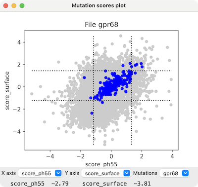
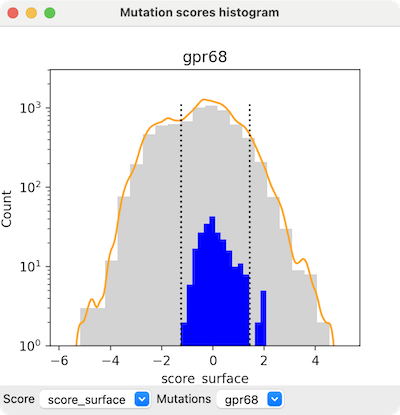

The mutationscores command shows the results of deep mutational scanning on protein structures and as interactive 2D plots. Deep mutational scanning generally entails making all possible substitutions (of the 20 standard amino acids) at each position of a protein and assessing the results with multiple high-throughput assays. For example, the assays could include growing cells expressing the mutants in the presence of different drugs and measuring cell viability or fluorescence.
In this page, mutant refers to a variant of the protein defined by a specific residue type (which could be the same as the wild type) at a specific position in the sequence, and in which all of the other positions have the wild-type residue. The result of a synonymous mutation is the same amino acid as in the wild-type protein, although the nucleic acid codon could have been different.
In general, each type of assay yields a score for each mutant. The scores are read from a mutation scores .csv file (details...) that can be opened from the the File menu or with the open command. Each file gives rise to a mutation set, and multiple mutation sets can be open at the same time. A mutation set can also be fetched from the AlphaMissense database (score name amiss) or from UniProt Variants (score names PolyPhen and SIFT).
Opening a mutation scores file automatically shows a scatter plot of the mutants with the first two scores as the axes, or a histogram if the file only contains one kind of score. The menus below the plot can be used to change which scores are plotted and for which mutation set.
By default, mutation scores are automatically associated with each open structure chain that has exactly the same sequence and residue numbering (as in the mutation data) the first time some analysis action is performed, such as interacting with a scatter plot. However, specific structure chains to associate can be designated with the chains option of the open command at the time of opening the mutation data, or later (after opening the data) with mutationscores structure.
See also: ChimeraX visualization of mutation scores
• mutationscores define [ new-score ] [ fromScoreName from-score ] [ aa one-letter-codes ] [ toAa one-letter-codes ] [ synonymous true | false ] [ above value ] [ below value ] [ ranges comparison-expression ] [ combine count | mean | stddev | sum | sum_absolute ] [ setAttribute true | false ] [ subtractFit sub-score ] [ mutationSet name ]
 Show a scatter plot of mutants for two scores, x-score and y-score. Only mutants with values for both scores will be plotted. The colorSynonymous option indicates whether to color in blue all circles for “mutants” that have the same residue type as the wild-type protein (default true) and the bounds option indicates whether to show dashed lines delimiting mean ± 2 standard deviations of their values (default true). The correlation option indicates whether to draw a line showing the least-squares fit (default false). The scatter plot will replace a pre-existing scatter plot unless replace false is given.
The mutationSet option allows specifying which dataset to use when more than one is open. If only one is open, the option is not needed. The name of a mutation set is derived from the input filename (for example, abcg2 if read from abcg2.csv). The names of open sets can be listed in the Log with mutationscores list, and a set can be closed with mutationscores close.
The menus below the plot can be used to change which scores are plotted and for which mutation set. Placing the cursor over a plotted point (circle) reports the specific mutation and its score values at the bottom of the panel.
Clicking the plot raises a context menu; entries that refer to a specific mutant only appear when the click is on a circle, and some entries only appear if there is an associated structure:
The following entries apply to the associated structure(s):
- Mutation [mutant] – information for the user (no action): which mutant was clicked
- Color mutations for [mutant position] – color in green all circles representating mutations at the same position as the clicked mutant
- Color mutations near residue [mutant position] – circles representating mutations at positions within 3.5 Å of the position of the clicked mutant (in the 3D structure of the associated structure(s))
- Color mutations for selected residues – color in cyan all circles representing mutations at positions of residues selected in the associated structure(s)
- Color synonymous mutations blue – color in blue all circles for “mutants” with the same residue type as the wild-type protein
- Hide (Show) synonymous bounds – dashed lines delimiting mean ± 2 standard deviations of results for mutants with the same residue type as the wild-type protein
- Ctrl-drag colors structure – Ctrl-dragging a rectangle in the plot shows the enclosed circles in green and selects the corresponding structure residues; this option indicates whether to also color the corresponding structure residues lime
and the other structure residues light gray
- Clear plot colors – color all circles gray
The following relate to plots:
- Structure residue [mutant position in structure] – information for the user (no action): the corresponding structure residue
- Select – select the corresponding residue
- Color green – color the ribbon and carbon atoms of the corresponding residue green
- Color to match plot – color the ribbon and carbon atoms of the corresponding residue to match the circle in the plot
- Show side chain – show the sidechain atoms of the corresponding residue
- Zoom to residue – zoom and clip to focus the view on the corresponding residue; clipping can be turned off with clip off, or with view to view all
- Label with [x-score] scores – label the corresponding residue with a color-coded grid of the x-score values for all substitutions at that position; the grid can be removed with label delete
- Label with [y-score] scores – label the corresponding residue with a color-coded grid of the y-score values for all substitutions at that position; the grid can be removed with label delete
- New plot – duplicate the current plot window to allow changing one copy while retaining the settings of the other
- Show histogram – show a histogram of the X-axis values
- Save Plot As... save the scatter plot as an image file (PNG, SVG, or PDF)
A new score can be computed from one or more of the existing scores with mutationscores define and then used in other mutationscores analyses just like any of the original scores. The mutationscores define command without any arguments will list the existing score names (same as mutationscores list), and mutationscores undefine can be used to delete a score.• mutationscores histogram score [ scale linear | log ] [ bins b ] [ curve true | false ] [ smoothWidth w ] [ smoothBins sb ] [ synonymous true | false ] [ bounds true | false ] [ replace true | false ] [ mutationSet name ]A new score can also define an interesting subset of the mutations. The aa and toAa options limit the mutations to specific “before and after” (before and after mutation) amino acid types. Specifying synonymous true limits the “mutations” to those in which the before and after amino acids are the same (wild-type). The above and below options limit the mutations to those within a given range of a single type of score specified with fromScoreName from-score. This can also be achieved more flexibly, potentially involving more than one type of score, with the ranges option, which specifies a boolean expression involving any existing score names along with "and", "or", "not", ">", ">=", "<", "<=", "!=", and "==" operators and parentheses, for example, "mtx <= -1.5 and sn38 >= 1.0".
A per-residue score has only a single value per position in the sequence. Several options create per-residue scores: synonymous true, or combine, or toAa with a single amino acid type specified. The combine option combines the scores for all mutations at a given position using the specified operation. With setAttribute true (default), defining a per-residue score assigns an attribute with the same name as the score to the associated structure residues. An attribute can be shown with coloring and used in selection and and command-line specification.
The subtractFit option performs a linear least-squares fit of the from-score to the sub-score and subtracts the linear values from the from-score values. The typical use of this would be to normalize a score. For instance, if the from-score is a cell growth measure in response to a drug and the sub-score is a surface expression score for the protein, then the subtraction attempts to normalize the drug response to account for the different amounts of protein reaching the membrane. A limitation of this simplistic normalization, however, is that the variation in response might not be a linear function of the quantity of surface-expressed protein.
• mutationscores label residue-spec score [ palette palette ] [ range low,high | full ] [ noDataColor color-spec ] [ height h ] [ offset x,y,z ] [ onTop true | false ] [ mutationSet name ]Show a histogram of mutation scores, with bar-height scaling either linear or log (default log). The number of bins b in the histogram defaults to 20. With curve true (default), a smooth curve is drawn in orange by approximating the histogram with a Gaussian convolution using smoothWidth w (default 10% of the standard deviation of the score) and smoothBins sb (default 200). The synonymous option indicates whether to show blue histogram bars for the “mutants” that have the same residue type as the wild-type protein (default true) and the bounds option indicates whether to show dashed lines delimiting mean ± 2 standard deviations of their values (default true). The histogram will replace a pre-existing histogram unless replace false is given. The menus below the histogram can be used to change which score is plotted and for which mutation set.
 Clicking the histogram raises a context menu, including:
- Switch log (linear) to linear (log) scale – type of histogram bar scaling
- Hide (Show) synonymous – blue histogram bars showing results for “mutants” with the same residue type as the wild-type protein
- Hide (Show) synonymous bounds – dashed lines delimiting mean ± 2 standard deviations of results for mutants with the same residue type as the wild-type protein
- Ctrl-drag colors structure – Ctrl-dragging a rectangle in the plot selects the corresponding structure residues; this option indicates whether to also color the corresponding structure residues lime
and the other structure residues light gray
- New histogram – duplicate the current plot window to allow changing one copy while retaining the settings of the other
- Save Plot As... save the histogram as an image file (PNG, SVG, or PDF)
• mutationscores statistics score [ type all | synonymous ] [ mutationSet name ]Label each of the specified residues in the associated structure(s) with a grid of all possible substitutions (the 20 standard amino acids) color-coded by the values of the score at that position. The coloring defaults are:
 palette redblue range full... meaning
palette redblue range full... meaningacross the full range of values (including the values of residues not being labeled). A narrower range can be specified as comma-separated values low,high. The noDataColor is used for residues without mutation scores (default
).
The label height h defaults to 1.5 Å. The offset x,y,z is the position of the lower left corner of the grid relative to the residue's α-carbon along X, Y, and Z in screen coordinates (default 0,0,3 Å). The onTop setting is whether to draw the labels on top of other objects regardless of their relative positions in 3D (default false). The labels can be removed with label delete.
Compute the mean and standard deviation of a score. The statistics are reported in the Log. By default, only the scores of synonymous mutants (proteins with the same amino acid sequence as the wild type) are included, but type all can be used to include the scores of missense mutants as well.• mutationscores umap score [ mutationSet name ]
Project the 20-dimensional vector of the scores of the 20 amino acid types at each sequence position into 2D using UMAP (Uniform Manifold Approximation and Projection). In the UMAP plot, each sequence position is shown as a circle labeled with the residue number and colored by the wild-type residue (20 distinct colors for the 20 residue types). Only positions at which all 20 residue types have scores are plotted. This is an experimental feature and thus far, has not revealed any striking patterns.• mutationscores structure chain-spec [ allowMismatches true | false ] [ alignSequences true | false | alignment-ID | sequence ] [ minimumPercentIdentity percent-ID ] [ mutationSet name ]
Designate one or more structure chains to be associated with the mutation scores for further analysis. Otherwise, the mutation scores will be associated automatically with each open structure chain that has exactly the same sequence and residue numbering (as in the mutation data) the first time some analysis action is performed, such as interacting with a scatter plot. Multiple structure chains can be associated per mutation set. If the chain does not have exactly the same residue types as the wild type in the mutation data, however, allowMismatches true is needed to force the association, and if the residue numbering is different, the alignment should be specified with the alignSequences option, with possible values:• mutationscores list
- true – align the sequence determined from the mutation data (using X for any missing residues) with the specified structure chain using the Needleman-Wunsch algorithm; if multiple structure chains are specified, attempt aligning with each and discard those with less than minimumPercentIdentity percent-ID (default 50%)
- false – same as omitting the alignSequences option
- a sequence alignment aleady open in the Sequence Viewer, specified by the alignment-ID shown in the title bar of that tool. The first sequence in the alignment must be the same as the sequence that goes with the mutation data, and there must also be a sequence that exactly matches (including numbering) each of the structure chains to be associated. If multiple structure chains to be associated have the same sequence, the alignment only needs to contain one copy, and the alignment may also contain additional sequences not used for association purposes.
– or –
- the sequence that goes with the mutation data, to be aligned to the sequence(s) of the specified structure chain(s) using the Needleman-Wunsch algorithm. As with sequence align, a sequence can be given as:
- a UniProt name or accession number
- the chain-spec of a structure chain already open in ChimeraX
- plain text of the entire amino acid sequence pasted directly into the command line
- the sequence-spec of a sequence in the Sequence Viewer, in the form: alignment-ID:sequence-ID (details...)
The allowMismatches option defaults to true if alignSequences is used, otherwise false.
Associations can also be specified with the chains option of the open command at the time of opening the mutation scores file.
List the names of the currently available score sets in the Log. The names are derived from the input filenames (for example, abcg2 if read from abcg2.csv). A set can be closed with mutationscores close.• mutationscores close [ mutation-set-name ]
Close a specified set of mutation scores. The names of currently open sets can be listed in the Log with mutationscores list.